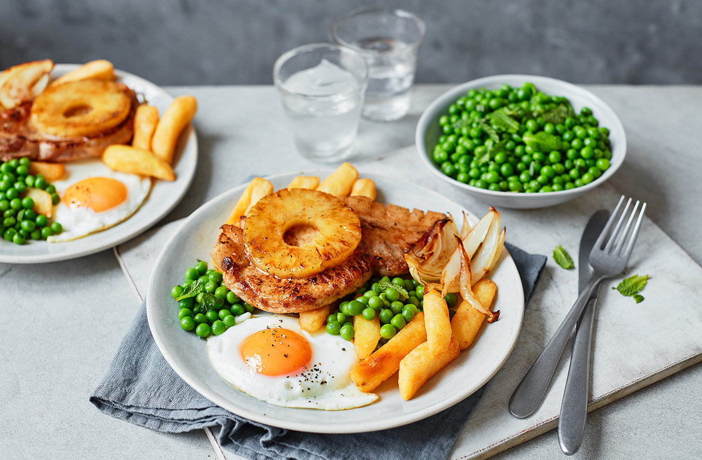

Recipe for Pork, Egg & Chips

We've updated a pub classic with this pork, egg and chips recipe. Top tender pork loin steaks with juicy caramelised pineapple and a perfectly fried egg, then serve with peas and crispy chips for a simple family dinner idea.
Ingrediants
- 600g frozen chips
- 2 tbsp olive oil
- 4 pork loin steaks
- 1 onion, cut into wedges
- 4 rings of tinned pineapple
- 350g frozen peas
- 15g mint, roughly chopped
- 4 eggs
Instructions
- Preheat the oven to gas 8, 220’C, fan 200’C. Place the chips on a large baking tray in an even layer. Cook for 20-25 mins until golden and crisp.
- Meanwhile, heat 1 tbsp olive oil in a large, ovenproof frying pan over a high heat. Season the pork loin steaks and add to the pan along with the onion wedges. Fry the pork for 2 mins per side until lightly golden. Place a pineapple slice on top of each pork loin. Place the frying pan into the oven, under the tray with the chips, for 8 mins or until the pork is cooked through. Set aside to rest for 5 mins.
- Bring a saucepan of slightly salted water to the boil and add the peas. Simmer for 3-4 minutes, until tender, then drain. Toss with ½ tbsp olive oil and the chopped mint.
- Meanwhile, heat ½ tbsp olive oil in a large frying pan and fry the eggs over medium-high heat until cooked to your liking. Divide the chips, onions, minted peas and pork loins between 4 plates. Drizzle the pork loins with any juice from the pan and top with an egg. Serve immediately.